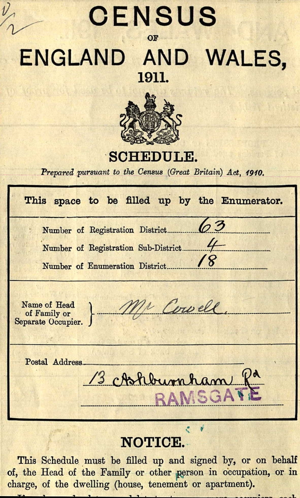

Nelson Victor Coombs 1894 - 1974
[ Home ] | [ Calendar ] | [ Surnames Index ] | [ Errors ] | [ Family History ]The child of Edward Coombs and Harriett Culmer, Nelson Coombs, the second cousin twice-removed on the mother's side of Nigel Horne, was born in Seasalter, Kent, England on 6 Oct 18941,2 and baptised in Hernhill, Kent, England on 11 Nov 1894. He married Hilda Packman at Christ Church, Dunkirk, Kent, England on 11 Nov 19223. Like his father, he was an agricultural labourer.
During his life, he was living at Red Lion Inn in Hernhill on 31 Mar 19016; on Crockham Lane in Hernhill on 2 Apr 19115; at The Pavilion, Strood, Kent on 29 Sept 19391; and at The Bothy, Staple Street in Hernhill in 19744. He served in the navy from 1914 to 1921 (Royal Navy).
He died on 7 Dec 1974 in Sittingbourne, Kent, England2.
Parents
- Edward was born on 27 Dec 1852
- Harriett was born on 23 Dec 1857
Citations
- 1939 Register - Findmypast (was the head of the household)
- England & Wales deaths 1837-2007 - Findmypast
- England Marriages 1538-1973 - Findmypast
- England & Wales, National Probate Calendar (Index of Wills and Administrations),1861-1941 Online publication - Provo, UT, USA: Ancestry.com Operations Inc, 2010.Original data - Principal Probate Registry. Calendar of the Grants of Probate and Letters of Administration made in the Probate Registries of the High Court of Justice in England. Londo
- 1911 Census for England & Wales - Findmypast (was age 16 and the son of the head of the household)
- 1901 England, Wales & Scotland Census - Findmypast (was age 6 and the son of the head of the household)
Media
Nelson Coombs
Nelson Coombs - probate
1901 UK Cesnsus
1911 UK Census - page 1

1911 UK Census - page 2

Nelson Victor Coombs - Naval Record
England & Wales births 1837-2006 - BMD/B/1894/4/AZ/000122/048
England & Wales deaths 1837-2007 - BMD/D/1974/4/AZ/000221/062
1901 England, Wales & Scotland Census - GBC/1901/0004885727
British Royal Navy Seamen 1899-1924 Image - GBM-ADM188-1122-0-0038
1939 Register Transcription - TNA-R39-1850-1850C-020-39
Canterbury Marriages Image - GBPRS-CANT-005265413-00228
England Marriages 1538-1973 Transcription - R_848275873
1911 England, Wales & Scotland Census Transcription - GBC-1911-RG14-04382-0003-4
England & Wales marriages 1837-2008 Transcription - BMD-M-1922-4-AZ-000224-049
GRO Index Army Marriages (1881 to 1955) Image - BMD-OVS-ARM2-000845
Family Tree

Map
Generated by ged2site. Last updated on Jul 3, 2024
Known Issues
Location for the event between 1914 and 1921 is empty